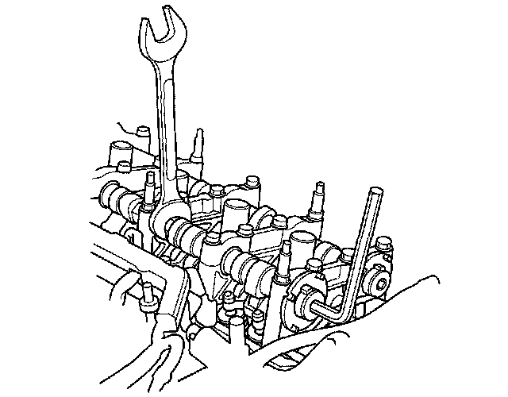
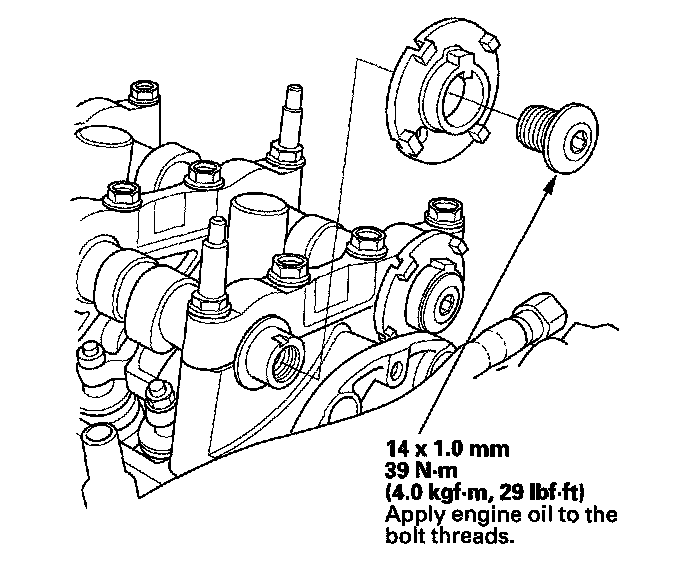

CMP Pulse Plate A Replacement
CMP Pulse Plate A Replacement1. Remove the cylinder head cover.
2. Remove camshaft position (CMP) sensor A.
3. Hold the camshaft with a 27 mm open-end wrench, then loosen the bolt.

4. Remove camshaft position (CMP) pulse plate A.

5. Install CMP pulse plate A in the reverse order of removal.